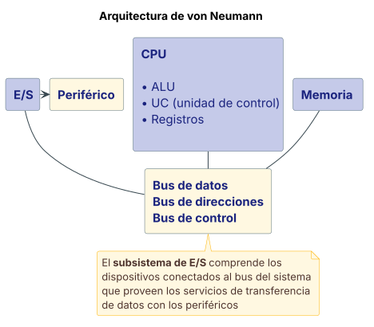
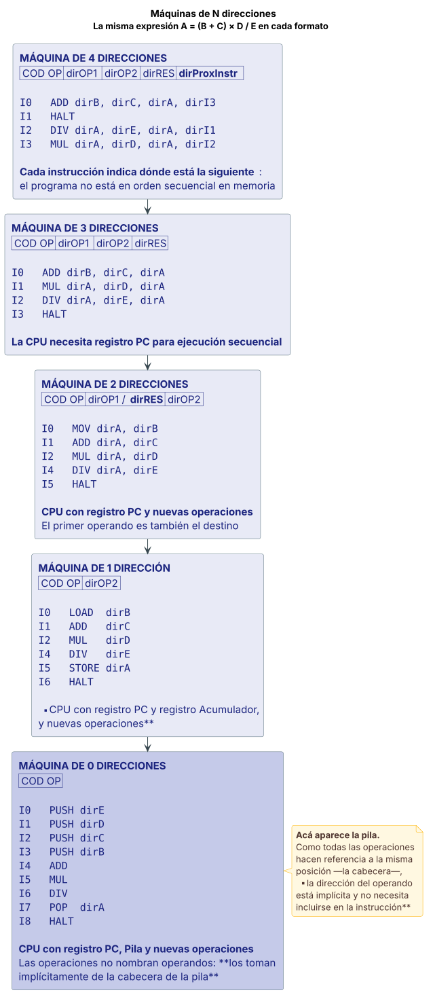

Von Neumann y pila¶
Este tema es el peor cubierto por las teorías de cátedra
En fuentes/Teorías/ no existe la clase 1. Los archivos van de la clase
02 a la 09. La única fuente de cátedra específica es
1 anexo clase 01 sobre maq_de_Ndir.pdf, que son 5 filminas (212 palabras)
y sólo cubre las máquinas de N direcciones.
Para pila, subrutinas y pasaje de parámetros —que sí se toman en los finales— hubo que recurrir a los resúmenes de alumnos, que según la jerarquía de fuentes están un escalón por debajo. Cada sección indica de dónde sale. Verificá estos puntos contra Stallings capítulos 3, 10 y 11 antes de darlos por cerrados.
Definición¶
La arquitectura de von Neumann¶
El modelo de arquitectura de von Neumann está basado en 3 subsistemas: CPU, Memoria y E/S, vinculados por el bus de datos, el bus de direcciones y el bus de control. La CPU se compone de ALU, Unidad de Control y registros.
Fuente: Teorías/03 Arq clase3 EntradaSalida.pdf, fil. 3.
La pila¶
Una pila es un conjunto ordenado de elementos, en el que sólo uno de ellos es accesible en un instante dado. El punto de acceso se denomina cabecera de la pila. El número de elementos de la pila, o longitud, es variable. Sólo se pueden añadir o eliminar elementos en la cabecera de la pila. Por esta razón, una pila también se denomina lista último en entrar-primero en salir (LIFO, last in first out).
Se usa normalmente para la gestión de llamadas y retornos a/de procedimientos. La pila crece desde direcciones más altas hacia más bajas.
Fuente: Resumen Arquitectura (2).pdf, p. 1 y Finales/Resumen AC Guaymas.docx.pdf, p. 1. Resúmenes de alumnos — la teoría de cátedra no cubre este punto.
Desarrollo¶
Máquinas de N direcciones¶
Ésta sí es fuente de cátedra. El anexo de la clase 01 resuelve la misma expresión —A = (B + C) × D / E— en máquinas con 4, 3, 2, 1 y 0 direcciones, mostrando cómo cada reducción del formato de instrucción exige agregar recursos a la CPU.
Formato: COD OP | dirOP1 | dirOP2 | dirRES | dirProxInstr
I0 ADD dirB, dirC, dirA, dirI3
I1 HALT
I2 DIV dirA, dirE, dirA, dirI1
I3 MUL dirA, dirD, dirA, dirI2
Cada instrucción indica explícitamente dónde está la siguiente, por eso el programa no está en orden secuencial en memoria.
Formato: COD OP | dirOP1 | dirOP2 | dirRES
La CPU necesita registro PC para ejecución secuencial.
Formato: COD OP | dirOP1/dirRES | dirOP2 — el primer operando es
también el destino.
CPU con registro PC y nuevas operaciones.
Formato: COD OP | dirOP2
CPU con registro PC y registro Acumulador, y nuevas operaciones.
Formato: COD OP — sin ningún operando explícito.
CPU con registro PC, Pila y nuevas operaciones.
Éste es el punto donde aparece la pila: las operaciones aritméticas no nombran operandos porque los toman implícitamente de la cabecera de la pila.
Fuente: Teorías/1 anexo clase 01 sobre maq_de_Ndir.pdf, fil. 1–5.
Operaciones sobre la pila¶
- PUSH (apilar): añade un nuevo elemento en la cabecera de la pila.
- POP (desapilar): elimina el elemento de la cabecera de la pila.
En ambos casos la cabecera experimenta el cambio apropiado.
- Operación unaria: realiza una operación con el elemento de la cabecera de la pila. Sustituye el elemento de la cabecera con el resultado.
- Operación binaria: realiza una operación con dos elementos de la cabecera. Elimina de la pila dichos elementos y pone el resultado de la operación en la cabecera.
Implementación de la pila¶
La implementación de una pila depende en parte de sus usos potenciales:
- Si se desean ejecutar operaciones con la pila disponibles para el programador, el repertorio de instrucciones dispondrá de operaciones orientadas al manejo de la pila —PUSH, POP y operaciones que utilicen uno o dos elementos de la cabecera como operandos—. Ya que todas estas operaciones hacen referencia a una misma posición, la cabecera de la pila, la dirección del operando u operandos está implícita y no necesita incluirse en la instrucción: son instrucciones con 0 direcciones.
- Si el mecanismo de pila va a ser utilizado sólo por la CPU —con usos tales como el manejo de procedimientos—, en el repertorio de instrucciones no se contemplarían instrucciones orientadas al uso de la pila.
En cualquier caso, la implementación requiere que exista un cierto conjunto de posiciones para almacenar los elementos. En memoria principal (o virtual) se reserva un bloque de posiciones contiguas para la pila. La mayor parte del tiempo el bloque está parcialmente lleno, y el resto está disponible para que crezca la pila.
Para un funcionamiento correcto se necesitan 3 direcciones, normalmente memorizadas en registros de la CPU:
| Registro | Qué contiene | Control de error |
|---|---|---|
| Puntero de pila (stack pointer, SP) | La dirección del tope o cabecera de la pila. Si se añade o elimina un elemento, el puntero se incrementa o decrementa para que contenga la dirección de la nueva cabecera | — |
| Base de la pila | La dirección base del bloque reservado para la pila | Si se intenta un POP cuando la pila está vacía, se informa de un error |
| Límite de la pila | La dirección del otro extremo del bloque reservado | Si se intenta un PUSH cuando el bloque está utilizado en su totalidad, se informa de un error |
Tradicionalmente, en la mayoría de las máquinas actuales la base de la pila coincide con la dirección más alta del bloque reservado, mientras que el límite se corresponde con la posición más baja. Por lo tanto la pila crece desde direcciones más altas hacia direcciones más bajas. Para acelerar las operaciones, también los dos elementos de la cabecera se almacenan a menudo en registros.
Fuente: Resumen Arquitectura (2).pdf, p. 1 y Finales/Resumen AC Guaymas.docx.pdf, p. 1. Resúmenes de alumnos — la teoría de cátedra no cubre este punto.
Subrutinas¶
Una subrutina es una sección de código que recibe el control en un punto de entrada y lo devuelve en un punto de salida. Es un programa auto-contenido que puede invocarse desde cualquier punto de un programa mediante la instrucción CALL.
El objetivo de la subrutina es realizar una tarea definida, para lo cual se le transfiere el control (procedimiento). Una vez finalizada la tarea lo devuelve al programa que la invocó, en el punto donde fue invocada.
Ventajas:
- Economía de programa: el código puede ser usado varias veces.
- Modularización: se puede subdividir el programa en unidades pequeñas, más fácilmente verificables.
- Para realizar su trabajo, se requiere pasar parámetros entre el programa que invoca y la subrutina invocada.
Funcionamiento del llamado y retorno:
- El programa invoca a una subrutina con la instrucción CALL. Al invocarla le transfiere el control: el PC se carga con la dirección de comienzo de la subrutina y la CPU comienza a ejecutar sus instrucciones.
- Cuando la subrutina completa su tarea, la última instrucción que ejecuta es RET. En ese momento el PC se carga con la dirección de la instrucción siguiente al CALL en el programa principal. Para poder recuperar dicha dirección, debimos haberla guardado previamente en la pila.
Anidamiento de subrutinas. Una subrutina puede invocar a otra subrutina. Cada subrutina tiene asociado su propio espacio de memoria en la pila. Depende del espacio de memoria de cada una, siendo casi infinita la cantidad de anidamientos. Cuando se termina una subrutina se devuelve el control a la subrutina que la invocó.
Pasaje de parámetros¶
A nivel de arquitectura de computadoras, los métodos de paso de argumentos se simplifican en dos:
| Por valor | Por referencia | |
|---|---|---|
| Qué se pasa | El valor de una variable a un procedimiento | La dirección de memoria del argumento, y no su valor |
| Consecuencia | Son considerados parámetros de entrada; independientemente del uso de este valor por parte del procedimiento, éste no puede ser modificado | Permite que los procedimientos realicen cambios al valor original de la variable |
Existen 3 métodos para pasar parámetros a subrutinas:
- Los parámetros se pasan a través de los registros de la CPU.
- Método sencillo, pero limitado por el número de registros disponibles: el número de registros es la principal limitación.
- Dado que se van a modificar los contenidos de los registros, es importante documentar los registros a usar.
- Los parámetros se transfieren a través de un área definida de memoria (RAM).
- Difícil de estandarizar, debido a las dificultades en asignar un área de memoria.
- Los datos se pasan a través de la pila.
- Es el método más ampliamente usado. El verdadero "pasaje de parámetros".
- La principal ventaja es que es independiente de la memoria y de los registros.
- Los registros no tienen que ser modificados en las subrutinas.
- Hay que comprender bien cómo funciona porque la pila es usada por el usuario —en la invocación y en la subrutina— y por el sistema —cuando salva la dirección de retorno en el CALL, o en las interrupciones—.
- En x86, SP apunta al último lugar usado.
Principales funciones de la pila:
- Pasaje de parámetros entre el programa principal y una, o varias,
subrutinas:
- Por VALOR: apilando registros que contienen los datos.
- Por REFERENCIA: apilando las direcciones efectivas de los datos.
- Guardar el contexto del procesador:
- Guardar el PC, que contiene la dirección de la próxima instrucción a ejecutar.
- Guardar el estado del procesador en ese momento (flags).
Fuente: Finales/Resumen AC Guaymas.docx.pdf, p. 1–2; Resumen Arquitectura (2).pdf, p. 1 y Finales/Resumen Arq oct2022.docx.pdf, p. 20. Resúmenes de alumnos — la teoría de cátedra no cubre este punto.
La pila en el resto del programa¶
Éstos sí son puntos de teoría de cátedra, y son la manera más segura de apoyarse en la pila en un final:
En interrupciones. La CPU salva todo o parte del estado del proceso
—al menos el PC y el PSW— típicamente en la pila del sistema, y la instrucción de
retorno desapila exactamente lo apilado. En el MSX88, IRET extrae 6 bytes
de la pila: 4 para la dirección de retorno y 2 para el registro de estado.
IRET es similar a RET por utilizar la pila, pero recupera además una
copia del registro de estado.
Ver interrupciones.
En RISC — la alternativa a la pila. El MIPS no tiene pila de hardware:
almacena la dirección de retorno siempre en R31. El salto a subrutina es
JAL dir-de-salto (R31 = PC; J dir-de-salto) y el retorno JR R31. En la
convención de nombres del MIPS, $29 es sp, el puntero de pila.
Ver RISC vs CISC.
En RISC — la ventana de registros. Los estudios que dan origen al enfoque RISC muestran que los llamados y retornos de subrutina son los que más tiempo consumen, y que cada llamada recibe y pasa pocos argumentos (> 98 % pasa menos de 6 datos) con nivel de anidamiento menor a 7. La ventana de registros es la solución de hardware al pasaje de parámetros: superponer los registros de argumentos a pasar de la subrutina j con los de parámetros recibidos de la j+1. Ver RISC vs CISC.
En multithreading. Cada hebra tiene su propio contexto de procesador —incluidos PC y SP— y área de datos para su pila (stack). Ver paralelismo.
Fuente: Teorías/02 Arq clase2 Interrupciones.pdf, fil. 5–7, 26; Teorías/2 anexo clase 02 ejer_int_en _MSX88.pdf, fil. 14; Teorías/6 anexo clase 06 sobre_winmips.pdf, fil. 22, 26; Teorías/06 Arq clase6 RISC.pdf, fil. 17, 26–35 y Teorías/09 Arq clase9 Procesamiento paralelo.pdf, fil. 40.
Diagrama¶
Los 3 subsistemas de von Neumann¶

Las máquinas de N direcciones¶

Fuente: Teorías/03 Arq clase3 EntradaSalida.pdf, fil. 3 (von Neumann) y Teorías/1 anexo clase 01 sobre maq_de_Ndir.pdf, fil. 1–5 (máquinas de N direcciones; los programas van transcriptos textuales).
No hay diagrama de cátedra de la estructura de la pila
La estructura de la pila —puntero de pila, base y límite— no tiene diagrama en las teorías: sólo aparece descrita en texto, y en resúmenes de alumnos, no en material de cátedra. Por eso no se dibuja acá: sería inventar un esquema que la cátedra nunca dio.
Ventajas y desventajas o comparaciones¶
Comparación de las máquinas de N direcciones¶
Resolviendo la misma expresión A = (B + C) × D / E:
| Máquina | Formato de instrucción | Recursos que necesita la CPU | Instrucciones del programa |
|---|---|---|---|
| 4 direcciones | COD OP, dirOP1, dirOP2, dirRES, dirProxInstr |
Ninguno extra: la instrucción dice dónde está la siguiente | 4 (incluido HALT) |
| 3 direcciones | COD OP, dirOP1, dirOP2, dirRES |
Registro PC para ejecución secuencial | 4 |
| 2 direcciones | COD OP, dirOP1/dirRES, dirOP2 |
PC + nuevas operaciones (aparece MOV) |
5 |
| 1 dirección | COD OP, dirOP2 |
PC + registro Acumulador + nuevas operaciones (LOAD, STORE) |
6 |
| 0 direcciones | COD OP |
PC + Pila + nuevas operaciones (PUSH, POP) |
9 |
La compensación (que se lee de la tabla): a menos direcciones por instrucción, instrucciones más cortas pero programas más largos y más recursos internos en la CPU.
Esta lectura comparativa es inferida de las filminas
El anexo muestra los 5 programas y anota qué recursos necesita cada CPU, pero no incluye un texto que saque explícitamente la conclusión de la compensación tamaño-de-instrucción vs. cantidad-de-instrucciones. La tabla de arriba cuenta lo que las propias filminas muestran; la interpretación de la última línea conviene contrastarla con Stallings (capítulo 10) antes de escribirla como afirmación de cátedra.
Los 3 métodos de pasaje de parámetros¶
| Vía registros | Vía memoria | Vía pila | |
|---|---|---|---|
| Ventaja | Método sencillo | Más capacidad para el pasaje y utilización | El más usado. Independiente de memoria y registros; los registros no tienen que modificarse en las subrutinas |
| Desventaja | Limitado por el número de registros disponibles; hay que documentar qué registros se usan | Difícil de estandarizar | Hay que comprender bien cómo funciona, porque la pila es usada por el usuario y por el sistema |
Parámetros por valor vs. por referencia¶
Ver la tabla en Pasaje de parámetros: por valor se copia el dato y el procedimiento no puede modificar el original; por referencia se pasa la dirección y sí puede modificarlo.
Fuente: Teorías/1 anexo clase 01 sobre maq_de_Ndir.pdf, fil. 1–5 y Finales/Resumen AC Guaymas.docx.pdf, p. 1–2 (resumen de alumno).
Ejemplo del curso¶
A = (B + C) × D / E en las 5 máquinas¶
Es el único ejemplo del curso para este tema, y está desarrollado completo en Máquinas de N direcciones: la misma expresión resuelta en máquinas de 4, 3, 2, 1 y 0 direcciones.
El uso de la pila en la interrupción del MSX88¶
El ejemplo de cátedra donde la pila aparece funcionando: el ciclo apilar → salto
al servicio → RTI → desapilar de la clase 2, con IRET extrayendo 6 bytes de
la pila del MSX88 (4 de dirección de retorno + 2 de registro de estado).
Ver interrupciones.
La Práctica 4 — pila, subrutina y convención en WinMIPS64¶
La Práctica 4 resuelta es el ejemplo del curso para subrutinas y pila. Sus objetivos declarados: familiarizarse con los conceptos que rodean a la escritura de subrutinas en una arquitectura RISC; uso normalizado de los registros, pasaje de parámetros y retorno de resultados, generación y manejo de la pila y anidamiento de subrutinas**.
El final no toma assembly, así que acá va sólo lo conceptual.
Convención de registros del MIPS¶
| Registro | Rol en la convención | ¿Se preserva? |
|---|---|---|
$a0, $a1 |
Parámetros de entrada a la subrutina | No |
$v0 |
Retorno del valor al programa principal (parámetro de salida) | No |
$ra |
Dirección de retorno | — |
$t0…$t9 |
Temporales | No preservados |
$s0…$s7 |
Variables de subrutina | Sí: hay que preservar sus valores |
$sp (r29) |
Puntero de pila | — |
Cómo funcionan jal y jr¶
jal(jump and link) salta a la etiqueta —dirección de la primera instrucción de la subrutina— y además salva en$rala dirección de retorno, que es la dirección deljal+ 4, es decir, la instrucción siguiente.jr $racarga en el PC la dirección salvada en$ra. Es equivalente alret.
Subrutinas anidadas: por qué hay que salvar $ra¶
Si la subrutina necesita invocar a otra subrutina:
Debe guardar el valor que contiene
$raprevio a invocar a la otra subrutina, para no perderlo con ese próximo salto. Una vez que se retorna de la segunda subrutina se debe actualizar nuevamente el valor en$rapara que pueda retornar al programa principal.
Éste es exactamente el motivo por el que se necesita una pila: con un solo registro de retorno, el anidamiento obliga a apilar.
Los errores típicos de convención que corrige la práctica¶
| Error | Por qué está mal | Cómo se arregla |
|---|---|---|
Usar $t0/$t1 como parámetros de entrada y $t2 como retorno |
No respeta la convención | Usar $a0 y $a1 de entrada y devolver en $v0 |
Usar $a0 después del llamado a subrutina |
$a0 es un registro no preservado: la subrutina llamada podría modificarlo —por ejemplo si a su vez llama a otra subrutina y le pasa un parámetro por $a0— |
Copiarlo a un $s (por ejemplo $s0) antes del jal |
Usar $t0, $t1, $t2 después de cada llamada dentro de un lazo |
Son temporales: pueden ser modificados dentro de la subrutina | Usar $s0, $s1, $s2 |
Una subrutina modifica $s0 |
El programa principal esperaría que se conserve | Salvarlo y restaurarlo |
La regla que se lee de todo el ejercicio
Los temporales $t se pueden usar libremente si sólo se leen antes del
jal o después de volver; si su valor tiene que sobrevivir a una llamada,
hay que usar $s —y entonces es la subrutina la que debe preservarlos—.
PUSH y POP implementados a mano¶
En WinMIPS no existen las instrucciones PUSH y POP, así que deben implementarse
con otras. Y el registro SP es en realidad un registro usual, r29, que por
convención se llama $sp. Como los registros ocupan 8 bytes, el push y el
pop deben modificar $sp con ese valor:
| Operación | Qué hace |
|---|---|
| PUSH | Decrementar $sp en 8 y luego guardar el registro en 0($sp) |
| POP | Leer el registro desde 0($sp) y luego incrementar $sp en 8 |
Esto confirma en concreto lo que dice la teoría de la pila: crece hacia
direcciones más bajas y $sp apunta al tope.
Los 3 modos de pasaje que ejercita la práctica¶
- Por registros y por valor: la versión base de la subrutina
potencia, con la base en$a0, el exponente en$a1y el resultado en$v0. - Por referencia: se pasa la dirección y la subrutina hace un
ldpara obtener el contenido —"contenido de la dirección de memoria exponente"—. También el ejercicio devector_cuadrado, que recibe la dirección de un vector, por referencia. - Por pila: la variante del ejercicio 7, donde los parámetros se apilan antes
del
jaly la subrutina los recupera desde0($sp).
Fuente: Prácticas/Practica 4 - Resolución - AC2025.pdf, p. 5–13.
Preguntas de final sobre este tema¶
:material-help-box: Ver el banco de preguntas de von Neumann y pila
Fuentes citadas¶
De cátedra:
Teorías/1 anexo clase 01 sobre maq_de_Ndir.pdf— 5 filminas. Máquinas de N direcciones. Única fuente de cátedra específica del tema.Teorías/03 Arq clase3 EntradaSalida.pdf— fil. 3, el modelo de von Neumann de 3 subsistemas.Teorías/02 Arq clase2 Interrupciones.pdf— fil. 5–7, 26, la pila en el tratamiento de interrupciones.Teorías/2 anexo clase 02 ejer_int_en _MSX88.pdf— fil. 14,IRETy los 6 bytes.Teorías/6 anexo clase 06 sobre_winmips.pdf— fil. 22, 26, MIPS sin pila de hardware.Teorías/06 Arq clase6 RISC.pdf— fil. 17, 26–35, ventana de registros.Teorías/09 Arq clase9 Procesamiento paralelo.pdf— fil. 40, la pila de cada hebra.
Prácticas resueltas (segundo escalón de la jerarquía, para los "ejemplos del curso"):
Prácticas/Practica 4 - Resolución - AC2025.pdf— p. 5–13. "Introducción al WinMIPS64. Pila, Subrutina y Convención": convención de registros,jal/jr, anidamiento, PUSH/POP implementados a mano, pasaje por registros / referencia / pila.
Resúmenes de alumnos —usados sólo donde la teoría no cubre el punto, y señalados como tales en cada sección—:
Resumen Arquitectura (2).pdf— p. 1. Pila, subrutinas y pasaje de argumentos. Es el que más se apega a Stallings.Finales/Resumen AC Guaymas.docx.pdf— p. 1–2, "Clase 1 – Repaso": pila, pasaje de parámetros, subrutinas, anidamiento.Finales/Resumen Arq oct2022.docx.pdf— p. 20, funciones principales de la pila.